What these signs do
These signs inform and guide. They tell you where places are, what road you are on, and where services can be found. They are normally rectangular or square, not the warning triangle or the prohibition or obligation circle. Because their purpose is to inform, an answer claiming the sign orders, forbids, warns of danger, or assigns right of way is almost always false. The one way an indication sign shuts a vehicle out is by reserving a road for a named class, as the blue motor-vehicles-only sign below does. Establish this principle first. It decides a large share of the questions in this topic.
Watch the traps. Numbers are the usual trap here: on these signs a number is a road number, a distance, or a bus-line number, never a speed limit, a weight limit, a time, or a count of anything.
Color indicates the road type
The same direction sign changes color according to the kind of road it refers to. Color is the most frequently tested detail here.

- White marks urban (in-town) roads and local destinations: the white TARANTO sign is the town itself.
- Blue marks ordinary extra-urban (out-of-town) roads: the blue exit advance sign belongs to an extra-urban road.
- Brown marks tourist and cultural destinations, such as monuments, sites, and campgrounds: the brown patches on that blue sign single out the tourist places.
- Green marks autostrade: this confirmation sign lists the distances to the next places along the autostrada.
- Yellow (not shown here) marks temporary signs for road work (lavori) and detours (deviazione).
The US bridge. At home, virtually every guide sign is green, whatever the road. In Italy green is not "guide sign": it specifically means autostrada. Read the background before the words: the same junction diagram is white in town, blue on an ordinary extra-urban road, green on an autostrada.
Road-identification signs (a letter and a number)
A short code names the road. The number identifies the road itself, and it is never a distance or a speed.
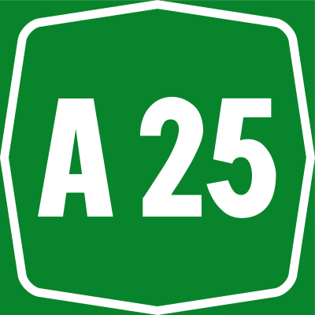
- A marks an autostrada, in green (e.g. A25). RA marks an autostrada link (raccordo autostradale), also green. The autostrada symbol with an arrow points the way to a toll station; in small format it also appears inside confirmation, preselection and advance signs.
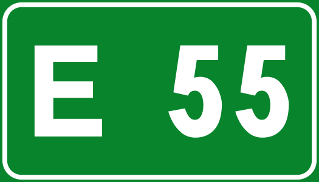
- E marks a European international route, in green (e.g. E 55). It appears inside advance junction signs and direction signs beside the arm that leads onto the route, and along the route itself it confirms the road you are on.
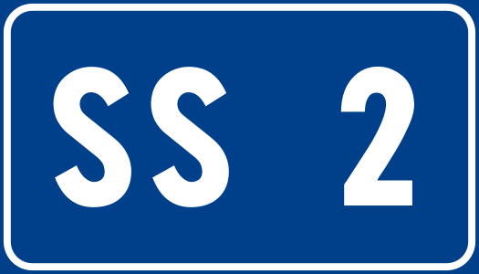
- SS marks a strada statale (state road), in blue (e.g. SS 2). SP marks a provincial road, in blue.
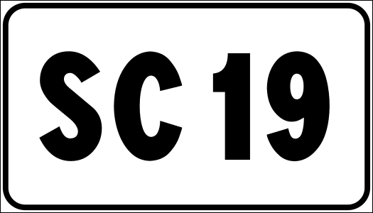
- SC marks a strada comunale (municipal road), in white.
A road code with a number names the road, the way A25 means autostrada number 25 and SS 2 means state road number 2. That is all the number does. It is not a distance, a speed limit, an exit number, an overpass number, or the kilometers traveled.
Distances, confirmation signs, and kilometer markers
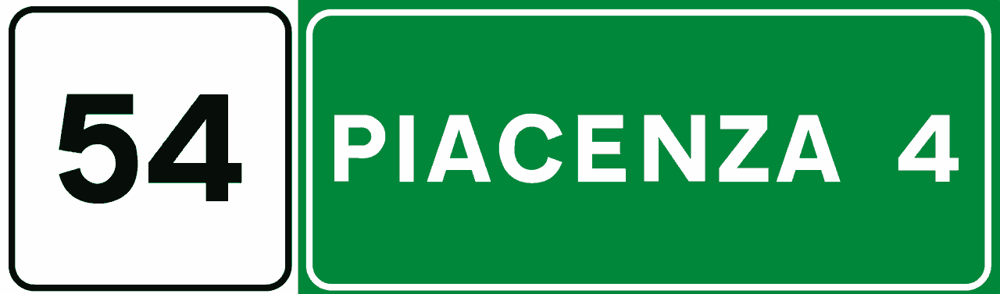
- A list of places with numbers gives the distance in kilometers to each, the distance still to travel, not the distance already covered, and certainly not road numbers ("MILANO 472" is 472 km to Milan, not autostrada 472).
- A confirmation sign after a junction restates the current road and the next destinations. It reassures; it gives no orders.
- An exit advance sign (itinerario extraurbano, blue, on main extra-urban roads and autostrade) names the coming exit and the distance to it (e.g. uscita FROSINONE 500 m), and beneath it the places, tourist ones in brown, you reach by taking that exit. The figure is the distance to the exit, not to the town and not to every place listed, and the road itself continues past it.
- On the autostrada progressive-distance sign, read the two figures separately: the left figure (black square) is the progressive distance from the start of the autostrada; the right figure is the distance to the next exit.
For US drivers. The left figure is the mile marker you already know from the interstate. Interstate mileposts count from the point where the route enters the state and start again at each state line. The Italian progressiva chilometrica counts from the start of the autostrada and runs its whole length. The purpose is the same: it is the number you give when you call for help, because it fixes your position to within a kilometer. One habit does not carry over. American exits usually take their number from the milepost beside them, while Italian exits are named for the place they serve and carry no number.
Locality (place-name) signs
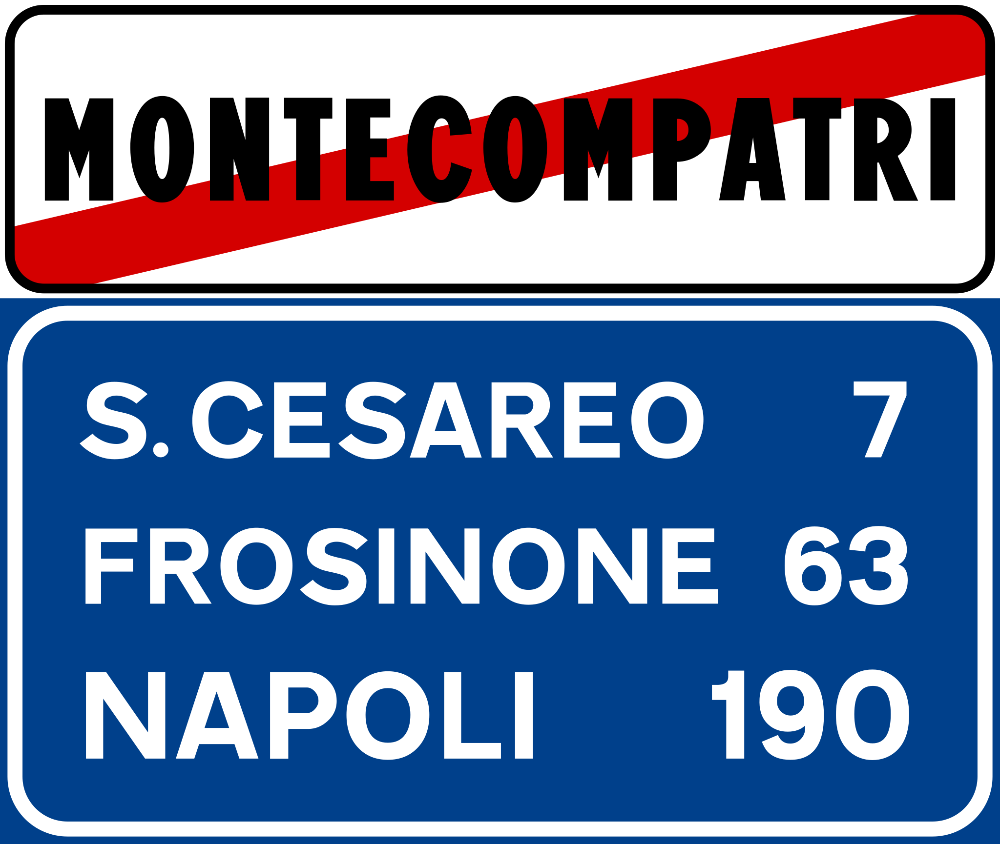
- A town name on a white panel means you are entering that town (centro abitato), on every road leading into it. Urban rules now apply, including the 50 km/h (31 mph) limit.
- The same name crossed by a red diagonal stripe means you are leaving it, often combined with a blue panel listing the next town and destinations with their distances. It stands at the town's exit, on the ordinary road leaving the town. Do not let the blue panel mislead you: blue is simply the color of every direction sign outside town. A main extra-urban road (strada extraurbana principale) is a specific class of road, divided by a median with no crossings at grade, that bypasses towns rather than running through them, so this sign is not found on one.
- A brown panel marks a tourist locality (località turistica), not an administrative town boundary.
Entering and leaving a centro abitato changes the rules on speed, parking, and horn use. The sign is a legal boundary, not just a name plate.
Junction advance signs and lane preselection
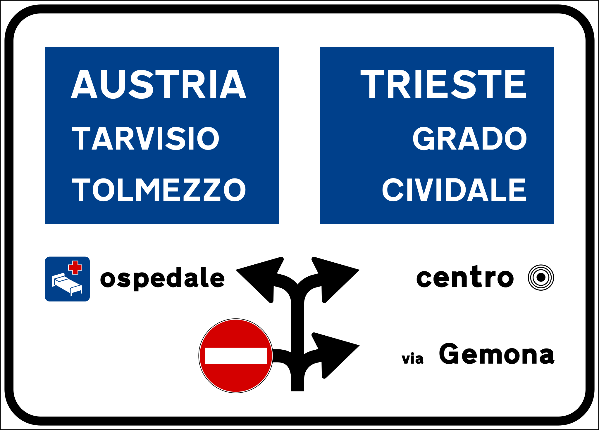
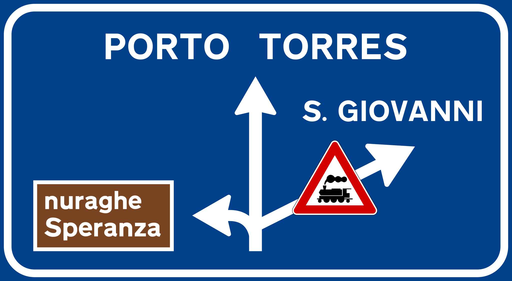
- Advance-direction signs (preavviso) diagram the junction ahead: each branch carries its destinations, and a symbol inserted on a branch qualifies that branch: a no-entry disc on a branch means you cannot turn there; a warning triangle on a branch means that hazard (e.g. a railroad crossing) lies down that road; a brown patch is a tourist destination; a green patch is the autostrada branch. A prohibition symbol on one branch (e.g. no trucks over 3.5 t toward the center) binds only the vehicles and the branch it shows.
- Preselection signs (preselezione) assign a lane to each destination. These are called channelizing lanes (corsie di canalizzazione), the lanes that sort traffic by destination. They stand where the lane lines are still broken, so you may still change lanes; the arrows on the road then bind you once the lines turn continuous.
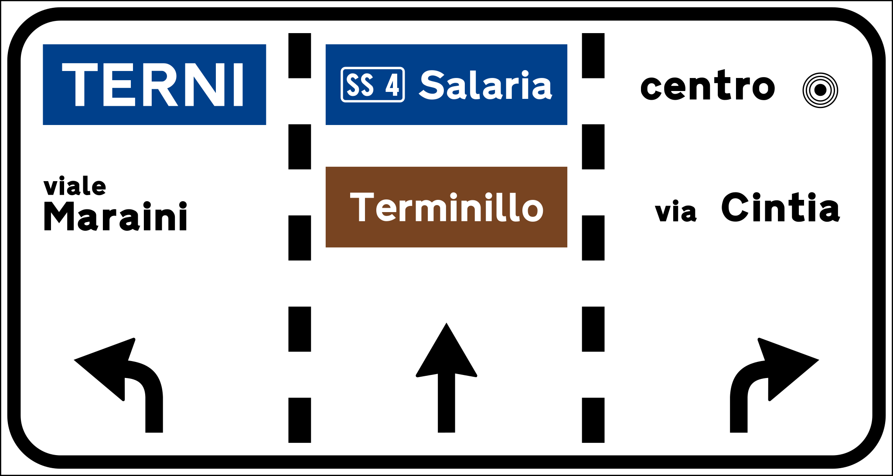
- These signs stand before the junction (an advance sign is never placed after it). On these boards a tangenziale is the ring road, the bypass running around the city.
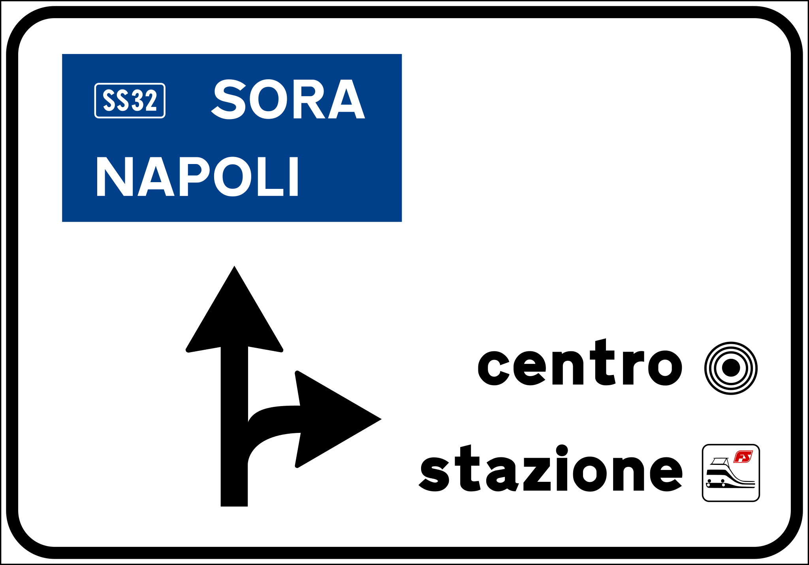
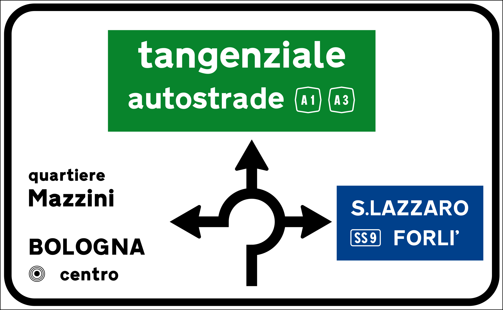
- The white urban advance sign diagrams a junction in town: each branch names what it leads to, the station and the city center on the right here, Sora and Napoli straight ahead. It is not found on extra-urban roads and it never tells you to turn back or leave town. The roundabout version draws the circle with the exits in order: first exit right for Forlì, second for the ring road. It is a diagram of destinations, not a closed road, a pedestrian zone or a ban, and it is valid at all hours.
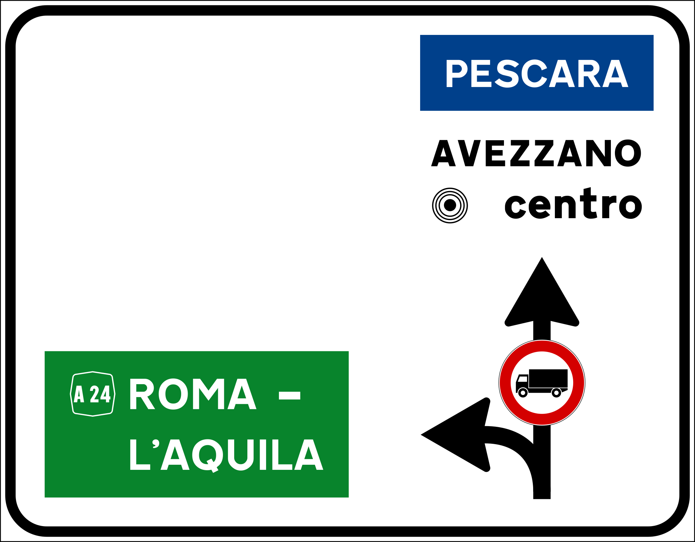
- A symbol inserted on a branch limits that branch: here the no-trucks-over-3.5 t disc on the straight-ahead road means such trucks may not continue straight for Avezzano, while cars may, and the left branch leads to the autostrada. The ban covers only the pictured category, not buses. The sign stands on an ordinary urban road, not at an autostrada entrance, and it is an indication sign, not a priority sign.
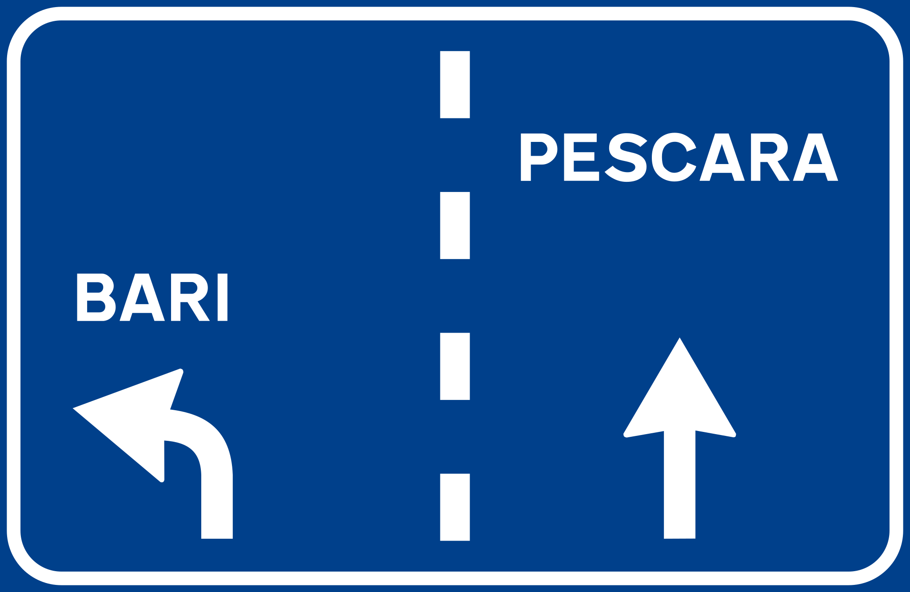
- The blue preselection sign on a two-lane extra-urban road sends each destination to its lane, Bari on the left, Pescara on the right, and it stands where you can still change lane. It orders no overtaking on the right, no U-turn, and it warns of no curve, straight, bridge or closed road: it only sorts traffic by destination.
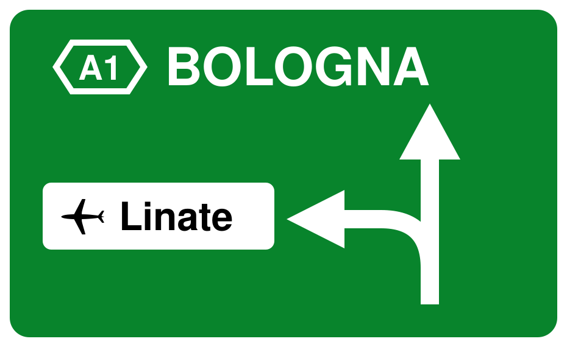
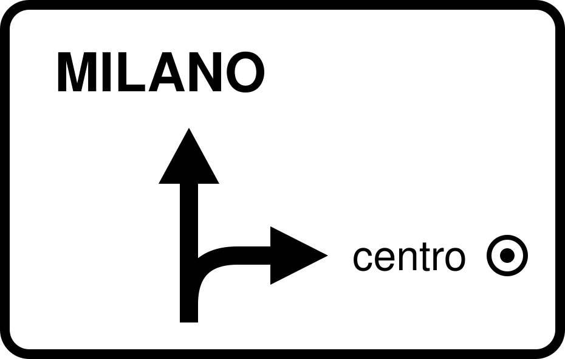
- The green board announces an autostrada interchange (svincolo): straight on for Bologna, the left branch for Linate airport. It forbids no turn, forces no lane change, and its figure is not a distance in kilometers to Bologna; it is not posted at an airport entrance. The white board is the same idea in town: straight for Milano, right for the city center, on an ordinary two-way urban street.
One-way signs (two forms)
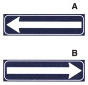
- The SENSO UNICO PARALLELO panels carry a horizontal arrow along the road you are crossing: the street running left (or right) is one-way in the arrow's direction.
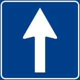
- The SENSO UNICO FRONTALE square carries an upward arrow: the road straight ahead of you is one-way, in your direction.
- Both inform. They impose no turn and no obligation to go straight. But on a one-way street a U-turn is always prohibited, and turning with the arrow you will meet no oncoming traffic.
Lane-use signs
Lane signs (segnali di corsia) are blue square or rectangular panels drawn as a map of the carriageway, with one arrow for each lane. A symbol placed on an arrow says how that lane may be used.
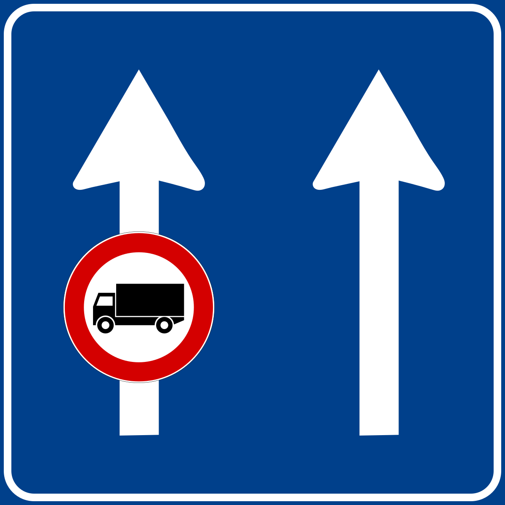
- A lane diagram with symbols shows how each lane may be used: here the left lane is barred to trucks over 3.5 t (everyone else, cars, buses, motorcycles, may use both lanes).
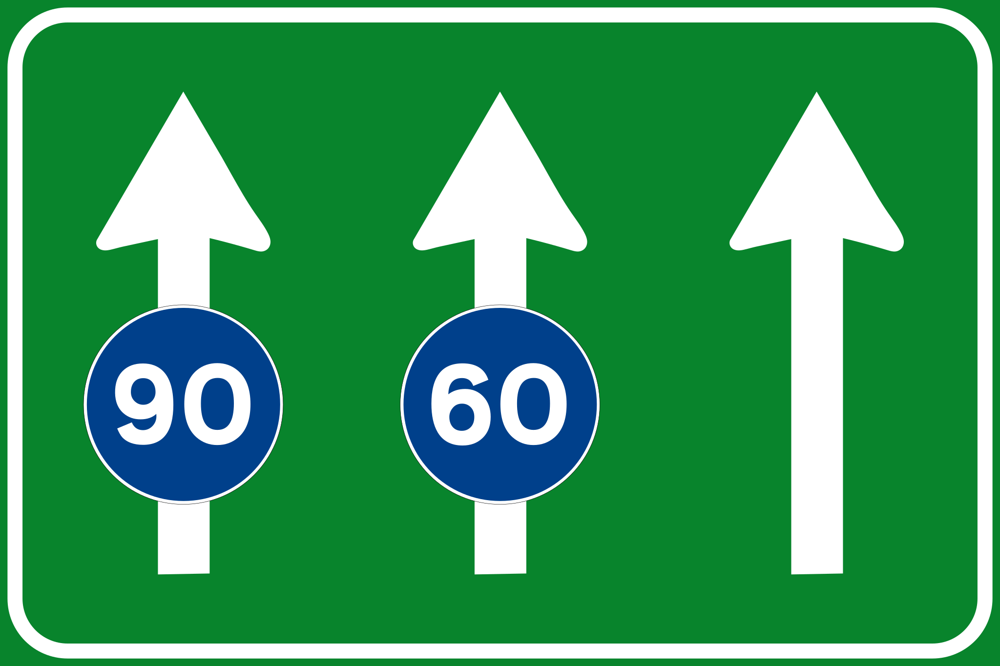
- On a green (autostrada) version, blue discs give each lane a mandatory minimum speed: the minimums rise toward the left, so the left lane belongs to the fastest traffic; a lane with no disc has no minimum. (Remember from the mandatory signs: a blue disc with a number is a minimum, and 160 km/h is never allowed. The autostrada cap is 130.)
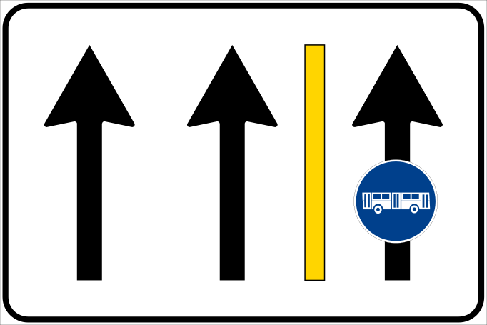
- An urban version can reserve a lane (yellow stripe and bus disc) for public-transport buses. That lane is not for taxis or bicycles. The sign assigns lanes and says nothing about overtaking: it does not "allow buses to overtake on the right". In practice a bus in its own lane may well move faster than a queue in the lanes to its left, but that comes from the general rule on slow traffic columns (moving up in your lane is not overtaking), not from this sign.
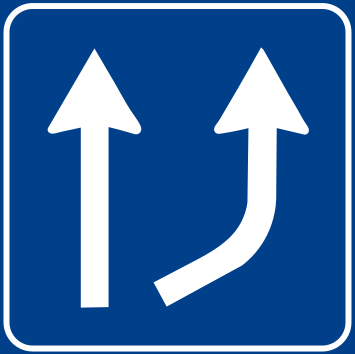
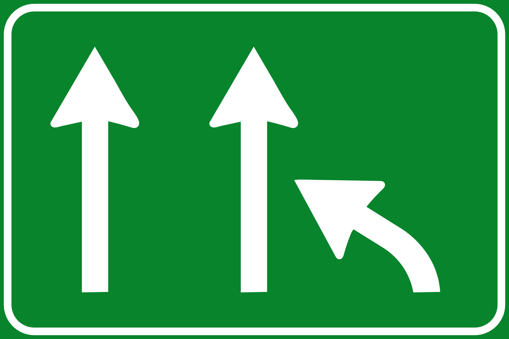
- Lane increase / lane reduction diagrams (aumento / diminuzione del numero di corsie) announce a change in the number of lanes; the reduction version advises slowing down. Both can carry a distance panel.
"Start of" signs

- The autostrada symbol on green marks the start of an autostrada; the same symbol on blue marks the start of a main extra-urban road. Crossed by a red stripe, each marks the end of that road type. A main extra-urban road, like an autostrada, has separate carriageways, one per direction.
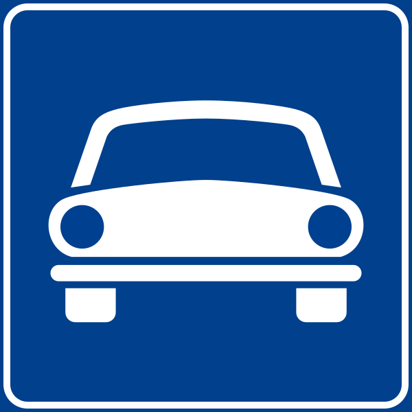
- A car symbol on blue marks a road reserved for motor vehicles only. Bicycles and other engineless vehicles are barred. Crossed by a red stripe, it marks the end of that road.
This sign asks only whether the vehicle has an engine. Buses and trucks have one, so they may use the road, and a bicycle has none, so it may not. The car in the symbol stands for every motor vehicle, not for cars alone. Size is a separate matter, and it is settled by the rule for the road rather than by this sign. That rule keeps mopeds and motorcycles under 150 cm³ off these roads. Do not confuse this blue sign with the red-ringed sign showing a car, among the prohibition signs, which bans every vehicle with a motor and more than two wheels and lets bicycles, mopeds and motorcycles through.
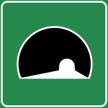
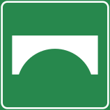
- The tunnel (galleria) sign, green on an autostrada, marks a tunnel entrance and carries the tunnel rules with it: do not stop, switch the engine off if halted for long, and grip the wheel for gusts at the exit. The bridge/viaduct sign warns of crosswinds on the span; both can carry a length panel.
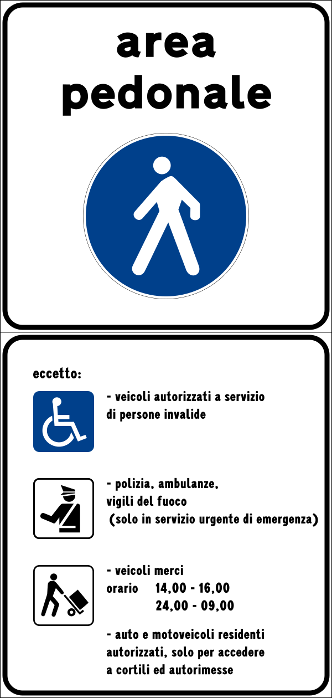

- The AREA PEDONALE board marks the start of a pedestrian area; the panel under it lists the vehicles that may still enter, here loading and unloading and vehicles for people with disabilities. It is not a police station, not a zone reserved only to the disabled, and not a market. The ZTL board marks the start of a limited-traffic zone, where traffic is allowed only to the categories listed on the panel: not a one-way street, not a ban on all vehicles, not residents only, not a military zone, and not a pedestrian area. (For the two zones' rules, see the Definitions topic.)
Crossings, children, and special structures
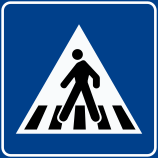
- The square blue crosswalk sign stands at the crossing itself (the triangle version is the advance warning, and there are no crosswalks on autostrade). It marks an unregulated crossing, one not governed by lights or an officer. Drivers stop and yield to pedestrians on the stripes; overtaking a vehicle stopped for pedestrians is prohibited.
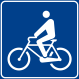
- The bike-crossing square stands at the bike crossing: drivers yield to cyclists on the stripes, not the other way around. Do not confuse it with the bike path (pista ciclabile) sign, which is a blue circle showing a bicycle with no rider: the circle is an obligation sign that reserves the path for bicycles, while this blue square shows a person riding and marks only the place where cyclists cross.
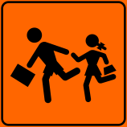
- The SCUOLABUS panel is double-duty: at the curb it marks a school-bus stop; on the back of a bus it means the bus is carrying schoolchildren. Either way: expect children to dash across.
- A dead end (strada senza uscita) is the red-topped "T" on blue: no through way for vehicles (motorcycles included); it says nothing about pedestrians. Neither version forbids a U-turn, and the sign does not announce a T-junction. The advance version shows the dead end on a side branch. You may still turn there, park there or turn around there; the branch simply goes nowhere for vehicles, though not necessarily for pedestrians.
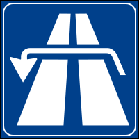
- The U-turn structure (inversione di marcia) sign, on separated-carriageway roads, points to an overpass (cavalcavia) or underpass (sottopassaggio) for turning back. It offers a possibility, never an obligation. On green, the same sign serves autostrade.
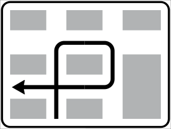
- The indirect left turn (svolta a sinistra indiretta) diagram shows the path to take where a direct left is impossible (turn right and loop around); going straight and turning right remain allowed.
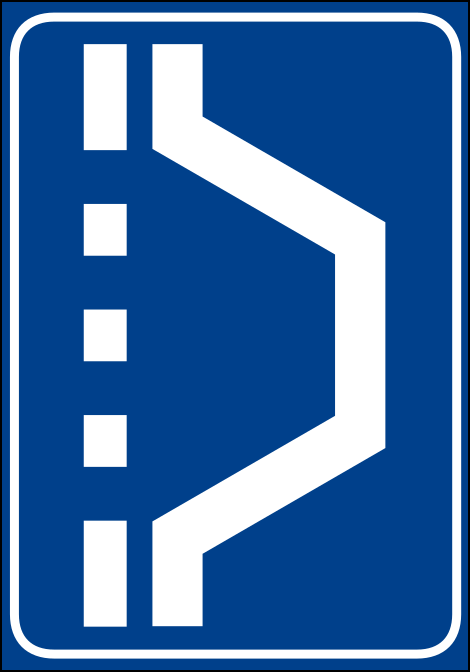
- A pull-off (piazzola) sign marks a pull-off area beside the carriageway for a stop, on extra-urban roads (blue); a panel can give the distance to it, and the green version with SOS marks an autostrada bay with an emergency call device.
A fermata is a brief interruption of your journey, and the driver does not leave the vehicle. This sign marks a pull-off area where you may make one, and it sets no time limit. Three hours is a real limit on the autostrada, but it applies to an emergency stop in the emergency lane. Twenty-four hours is the longest a vehicle may be left in a service area. Neither limit applies to this sign.
Borders and national limits
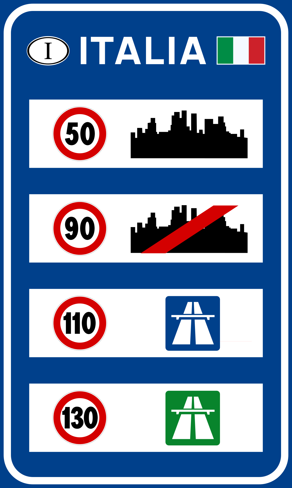
- The ITALIA board with the general speed limits (50 town / 90 secondary / 110 main extra-urban / 130 autostrada) stands at the border, facing drivers entering Italy, not at the entrance of every city.
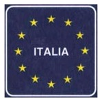
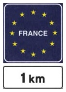
- The EU-stars ring with a country name marks the state border with an EU member: there is no obligation to stop, no customs halt. The advance version adds the distance (e.g. 1 km). Neither is a plate carried on vehicles.
Mountain-pass boards
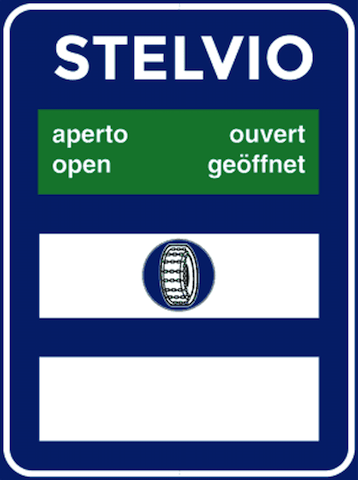
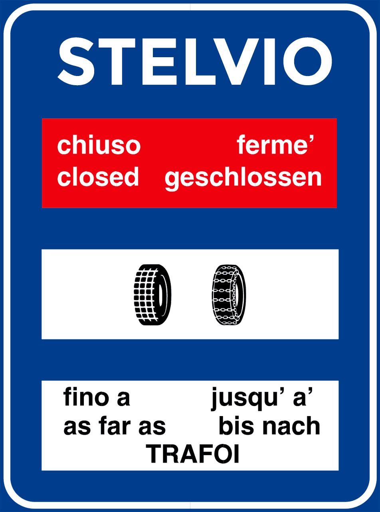
The pass status board (e.g. STELVIO) reports whether the pass road is open: APERTO/open plus a chains symbol means open, but only to vehicles fitted with snow chains or winter tires, the chains going on the driving wheels, two on most cars and all four only on a four-wheel-drive vehicle; CHIUSO/closed means the pass cannot be reached, with the panel naming how far you can get (e.g. fino a Trafoi). On that reachable stretch, chains or winter tires are recommended, not required. Note the nuance: the aperto+chains board is a condition for transit; the chiuso board's chains symbol is a recommendation for the open stretch.
Carrying chains is not a standing duty. The road authority may order that vehicles on a given road fit winter tires or carry chains on board, and where it has done so a blue circular sign states it. Without such an order a board like this one reports conditions and advises, and nothing on it makes chains a condition of passing. Such orders are common in winter on mountain roads and on many main roads, and a driver who meets that sign without chains on board or winter tires fitted may not go on, so in winter it is prudent to carry chains or fit winter tires before setting out.
Advisory, not mandatory
- The blue square with a number (no red border!) is the advised speed in good conditions, not a limit, not a minimum: you may go slower, and you may lawfully exceed it within the legal limits. Crossed by a red stripe, its validity ends. It may carry an extent panel giving the length of the stretch the advice covers.
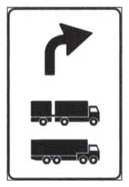
- The advised route for heavy vehicles (white panel: curved arrow + truck silhouettes) recommends that truck-and-trailer combinations (autotreni: a truck pulling a full trailer), tractor-trailers (autoarticolati: a tractor unit with a semi-trailer, the American "semi") and trucks over 3.5 t turn off to avoid the town center. It is Italy's counterpart of the US TRUCK ROUTE bypass sign. It advises. It does not forbid or oblige.
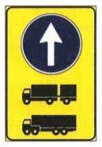
- The yellow work-zone version of the heavy-vehicle route sign is the opposite of the white advisory panel shown in the previous box. On a yellow background it carries a round blue mandatory arrow with the truck silhouettes, and it imposes a compulsory direction on those vehicles for the duration of the road work.
Service signs (a symbol in a blue or brown rectangle)
A symbol in a blue rectangle (or brown, for tourism) marks a facility, usually a short distance ahead. These are the pictograms to know.
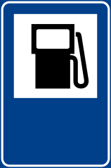
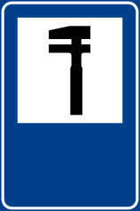
- The fuel pump marks a gas station, selling any fuel, not only LPG, and it is not a refinery. The wrench marks a vehicle repair shop.
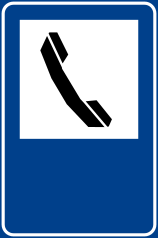
- The telephone handset marks a public telephone.
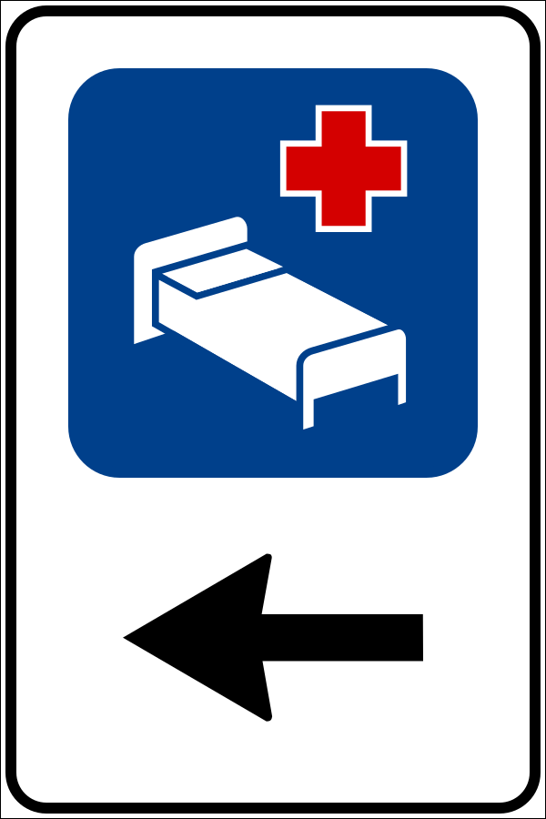
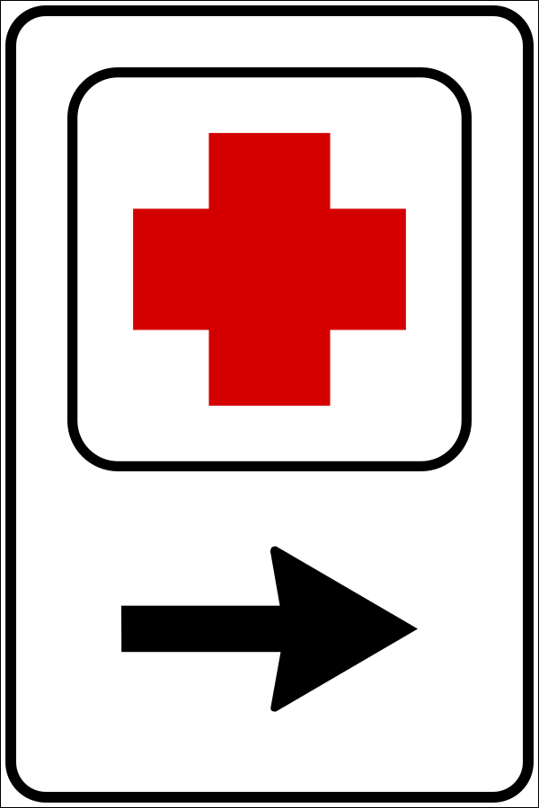
- A bed with a red cross marks a hospital, near which you drive quietly. A red cross alone marks a first-aid post. A pharmacy uses a green cross. An arrow below points the way in.
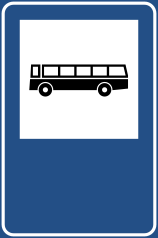
- The bus marks the stop of an extra-urban bus line, and it can carry a departure-times panel. It is also found on urban streets, and it is not a parking area for buses or trolleybuses. A P with a bus and line numbers marks a park-and-ride, where you park the car and take bus 8 or 45. The numbers are bus lines, not hours or bus counts.
- A car on a flatcar with a bed behind it marks a large train station with car-on-train service (auto al seguito): your car is loaded onto a flatcar while you travel in a sleeping car or couchette, which is what the bed stands for. The sign marks the access where cars are loaded. You do not ride inside the car, and the bed does not mean a hotel with guarded parking. A motorhome over a drain marks a camper service area for emptying gray and black water, open to any vehicle with sanitary fittings. It is not a toilet for travelers.
- A tent and a travel trailer on brown mark a campground.
- TAXI on orange marks a taxi stand, an area bordered in yellow with the TAXI inscription. SOS marks a roadside emergency call device, not a public phone.
- An i with a bed on brown marks a tourist and hotel information office. The POLIZIA STRADALE board gives the address and phone numbers of the nearest traffic-police command. It is an information sign, not a checkpoint.
- Wavy lines with a name panel, such as fiume Arno, name the river a bridge crosses.
Temporary (yellow) detour signs
A yellow advance-detour sign announces that the road is cut ahead by road work and diagrams the detour. Read its bottom panel carefully: the figure (e.g. 2 km) is the length of the detour, not the distance to it and not the length of the work site. The destination stays reachable, via the detour.
Summary of key points
- The sign informs. It does not warn, forbid, oblige, or assign right of way. And advisory signs (advised speed, advised routes) stay advisory.
- Color tells the road type: white urban, blue extra-urban, green autostrada, brown tourist, yellow temporary. In the US green means "guide"; in Italy it means autostrada.
- Numbers: road number (A25, SS 2, E 55), distance in km, or bus line, never a speed, weight, time, or count. On the autostrada distance sign the left figure is the progressive kilometer and the right figure is the distance to the exit.
- A town name means you are entering; with the red stripe you are leaving. And the urban rules switch on and off with it.
- On junction diagrams an inserted symbol qualifies its branch: no-entry bars a branch, a triangle warns down a branch, a brown patch is a tourist destination, a green patch is the autostrada. Preselection signs assign lanes while the lines are still broken.
- One-way comes in two forms (parallel and head-on); U-turns are banned on one-way streets. Lane-use signs can bar heavy trucks from a lane, set rising autostrada minimums, or reserve a bus lane.
- EU borders: no stop required. The ITALIA board at the border lists the national limits (50/90/110/130). Pass boards: open-with-chains is a condition; closed-with-chains is a recommendation for the reachable stretch.
- The detour panel figure is the length of the detour. The park-and-ride numbers are bus lines. The pharmacy cross is green; first aid is red.